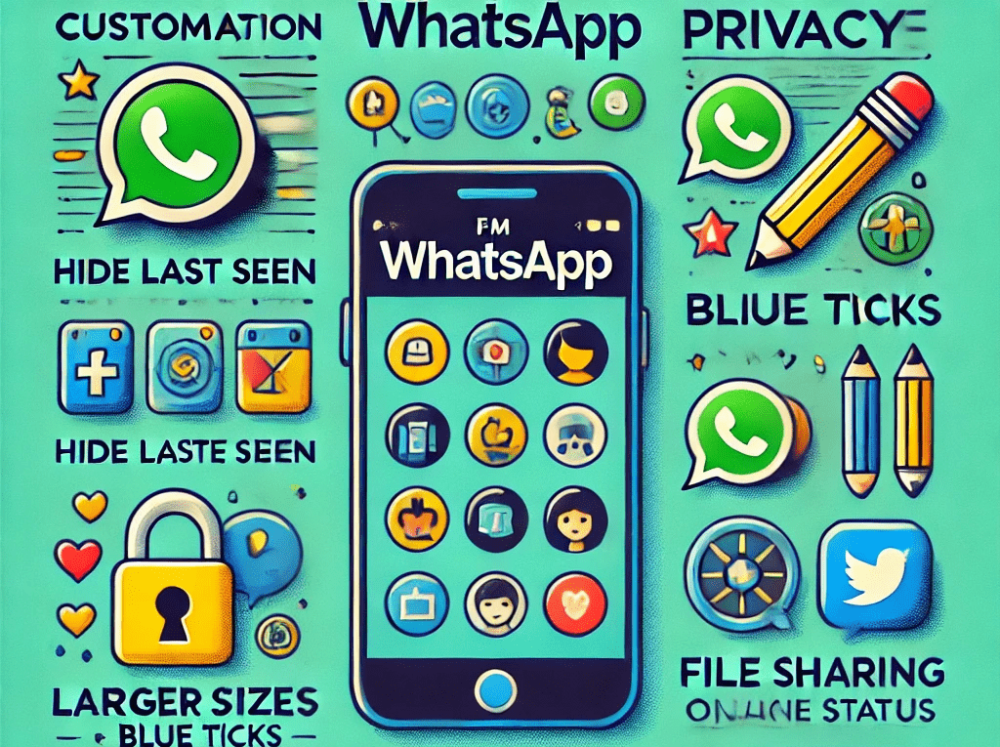

FM WhatsApp Download: The Best Alternative to Regular WhatsApp
In a world where communication is key, WhatsApp has become a household name. Millions of people around the globe rely on it to chat, share pictures, videos, and stay in touch with friends and family. But let’s face it – sometimes, the standard WhatsApp app can feel a little... well, limiting. Enter FM WhatsApp – an alternative that takes your messaging experience to a whole new level.
In this article, we’re going to dive into everything that makes FM WhatsApp so great and why you might want to consider downloading it today. Whether you’re a tech enthusiast or just someone who wants more control over their messaging app, FM WhatsApp has something for everyone.
What is FM WhatsApp?
FM WhatsApp is a modified version of the original WhatsApp Messenger app. It’s not available on the Google Play Store or Apple App Store (but don’t worry, we’ll show you how to download it safely). It’s developed by third-party developers who’ve taken the classic WhatsApp and added a ton of useful features that are either restricted or not present in the official version.
It’s important to note that FM WhatsApp isn’t the only WhatsApp mod out there. However, it stands out because of its user-friendly interface, customization options, privacy settings, and extra features that elevate your messaging experience. If you like WhatsApp but want something a little more flexible, FM WhatsApp could be just the thing for you.
Key Features of FM WhatsApp
1. Customization Galore
One of the main attractions of FM WhatsApp is the customization options. Have you ever wanted to change the theme of your WhatsApp, add a new look to your interface, or make it more “you”? Well, FM WhatsApp lets you do just that! With FM WhatsApp, you can:
- Change themes: There are hundreds of themes to choose from, and you can even download new ones online. Customize the way your WhatsApp looks to match your style.
- Customize fonts: Want to change the font style or size? FM WhatsApp lets you adjust the look of your text to make chatting more fun.
- Alter the app’s icons: Tired of the standard green WhatsApp icon? FM WhatsApp lets you change the app icon to something that fits your personality.
2. Enhanced Privacy Features
Let’s be honest: we all value our privacy. FM WhatsApp goes the extra mile in giving you full control over who sees your online status, last seen, and more. Here are some of the privacy features that will have you saying, “Why wasn’t this in the original WhatsApp?”
- Hide Last Seen: With FM WhatsApp, you can hide your last seen from everyone or specific contacts. No more worrying about someone seeing when you were last active.
- Freeze Last Seen: If you don’t want people to know when you last used WhatsApp, you can “freeze” your last seen, making it look like you haven’t been online in ages.
- Hide Online Status: You can also hide your online status so people can’t see when you’re actively using the app.
- Hide Blue Ticks: FM WhatsApp allows you to hide blue ticks (read receipts). This means you can read messages without the sender knowing.
- Hide Second Tick: The second tick usually indicates that the message has been delivered. With FM WhatsApp, you can hide this second tick as well.
3. Increased File Sharing Limit
WhatsApp has a file sharing limit that can be frustrating, especially when you want to send high-quality videos or large files. FM WhatsApp takes care of this issue by allowing you to share larger files and higher-quality media. Here’s a breakdown:
- Send larger videos: In the official WhatsApp app, you’re limited to sending videos of 16MB or less. But with FM WhatsApp, you can send videos up to 700MB in size! So go ahead and share those long family videos or high-definition movie clips.
- Send larger images: FM WhatsApp allows you to send images up to 90MB in size without compromising on quality. Perfect for sharing those detailed, high-resolution photos.
- Send documents: FM WhatsApp supports sending PDF files and other documents up to 100MB. This makes it a fantastic option for work-related messages or sharing large documents with friends.
4. Anti-Ban Feature
Many people avoid using modified apps because they fear being banned from WhatsApp. The good news is that FM WhatsApp has an anti-ban feature. This means that you’re less likely to face the risk of getting banned by WhatsApp’s official team while using the app. It’s a huge relief for those who want the benefits of FM WhatsApp without the stress of being kicked off the platform.
5. Dual WhatsApp Accounts
Are you juggling two phone numbers? Maybe you have a personal number and a work number. FM WhatsApp lets you run two WhatsApp accounts on the same device! This feature is a game-changer for people who want to keep their personal and professional lives separate. With FM WhatsApp, you can manage both accounts effortlessly without having to switch between devices or apps.
6. More Control Over Group Chats
Group chats are great, but they can sometimes be a bit overwhelming, especially when there are too many people and notifications. FM WhatsApp gives you more control over group chats, allowing you to:
- Mute notifications for specific members: You can mute notifications from specific group members, so you’re not constantly getting bombarded by messages from that one friend who always sends messages at the worst times.
- Hide group notifications: If you’re part of a noisy group chat, you can hide the notifications entirely so they don’t clutter your notification bar.
- Set group restrictions: FM WhatsApp allows you to limit who can send messages in a group, making it easier to manage large groups.
7. Enhanced Emojis and Stickers
Who doesn’t love a good emoji or sticker? FM WhatsApp comes with a whole new collection of emojis and stickers that aren’t available in the official app. You can use these to express yourself in fun and creative ways. FM WhatsApp also lets you send animated stickers, which is a cool feature that brings your conversations to life.
8. Message Scheduling
Have you ever wanted to send a message at a specific time but didn’t want to forget about it later? FM WhatsApp lets you schedule messages to be sent at your desired time and date. This is perfect for sending reminders, wishing someone a happy birthday, or just planning ahead for a message that you don’t want to send immediately.
9. More Control Over Notifications
Another cool feature FM WhatsApp offers is the ability to customize your notifications. You can choose different notification styles, sounds, and vibration patterns. Plus, you can customize the notifications for individual contacts or groups. So if you don’t want to be disturbed by a certain group chat, you can adjust the settings so it doesn’t interrupt your day.
How to Download FM WhatsApp Safely
Now that you know all the great features FM WhatsApp offers, you’re probably wondering how to download it. The process is pretty straightforward, but it’s important to download it from a reliable source to avoid any potential security risks. Here’s how you can do it:
- Search for a trusted source: Look for a trusted website that offers FM WhatsApp APKs. There are many sites out there, but make sure you pick one that has good reviews and ratings.
- Enable Unknown Sources: Since FM WhatsApp isn’t available on the Google Play Store, you need to enable the “Install from Unknown Sources” option in your phone’s settings.
- Download the APK: Once you’ve found a reliable site, download the FM WhatsApp APK file.
- Install the APK: After downloading, tap on the file to start the installation process. Follow the on-screen instructions, and within moments, you’ll have FM WhatsApp installed on your phone.
Final Thoughts
FM WhatsApp is an excellent alternative for anyone looking to enhance their WhatsApp experience. It brings so many extra features that the official WhatsApp app doesn’t offer, from customization options to enhanced privacy and file-sharing capabilities. Whether you want to customize your app, protect your privacy, or send larger files, FM WhatsApp gives you the tools to do it all.
Of course, as with any modified app, use it responsibly and ensure you’re downloading it from a trusted source. But if you’re looking for an alternative to the standard WhatsApp, FM WhatsApp is definitely worth a try.
Happy chatting!